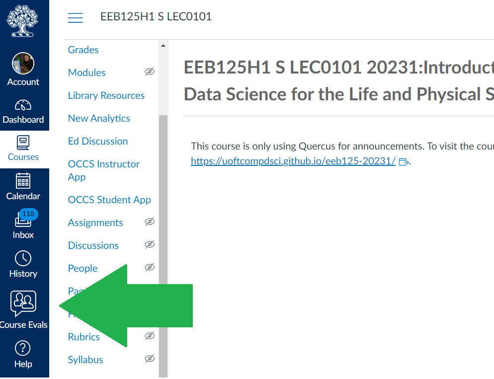
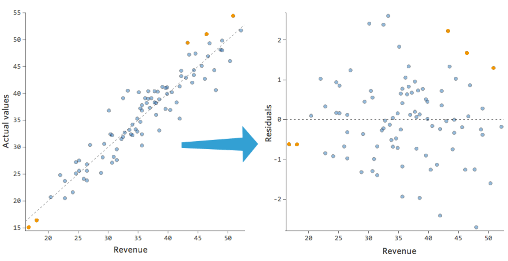

Week 11: Linear Regression#
March 26, 2025#
Michael Jongho Moon
Exam Info#
- Final Exam is on Thursday, April 17, 2025 from 2 pm ET to 5 pm ET.
- The final exam will be written in a supervised, in-person setting, in computer labs in Bahen Centre.
- Bring your Tcard or some other form of goernment-issued photo ID. The FAS rules on in-person final exams will apply.
- Each student will use a lab computer, not their own laptop, to complete the exam.
- You'll login with your UTORid and password, and will also need your U of T email address to login to JupyterHub.
- Allowed aids
- The exam will be written on a Jupyter notebook.
- You'll have access to the EEB125 course website, JupyterHub (including all of your course work from the semester), and MarkUs. However, you won't have access to any other websites (e.g., Quercus, Google, Facebook), and of course will not be allowed to communicate with anyone else during the exam.
- You may bring additional course notes on paper (handwritten or printed).
Course Evaluations#
{kind=link}
Course evaluations are until April 8.
Data Science Methods#
Hypothesis testing covered how to:
test if a percentage (statistic) is different from some hypothesized values.
test if two different groups have different means (or median).
Confidence intervals covered how to:
get a range of values which estimate a parameter (i.e., mean, median, percentage).
get a range of values which estimate the difference in means (or medians) of two different groups.
Linear regression we covered how to:
look at the relationship between two columns in a data frame. (e.g., the relationship between height and mass of mammals).
Linear Regression#
Basic idea#
Linear regression is a useful technique for creating models to explain relationships between variables.
The dependent variable must be numeric, and have meaningful numeric values.
The independent variables can be interval or categorical variables.
Essentially we have some data and want to estimate the line.

We call the estimated line \(\hat{Y} = b_0 + b_1 X\), where:
\(b_0\) is the estimated y-intercept
\(b_1\) is the estimated slope
{kind=link}
Specifically, we are looking for the slope to be non-zero, to have an analytical linear relationship between the independent and dependent variables.
Recall, the summary table will output a p-value for testing: \(H_0: slope = 0\).
Thus, if the p-value is small there is evidence against the null hypothesis that there is no linear relationship between the variables.
if the p-value is small then we say that analytically, there is evidence that the slope is not 0. Implying there is a linear relationship between the independent and dependent variable.
if the p-value is large then we say that analytically, there is evidence that the slope is 0. Implying there is not a lineawr relationship between the independent and dependent variable.
Example 3: Close to linear - from last week#
Last week in Example 3 we did a linear regression on data that was almost perfectly linear.
Let’s build on this example to assess whether the model is appropriate.
import pandas as pd
import numpy as np
np.random.seed(2025) # set the seed so that it's reproducible
data = {"depvar" : np.arange(start=0, stop=8, step=1) + 2,
"indvar" : np.arange(start=0, stop=8, step=1) + np.random.uniform(low=0, high=2, size=8)}
df = pd.DataFrame(data)
df
import matplotlib.pyplot as plt
plt.scatter(x=df["indvar"], y=df["depvar"])
plt.xlabel("indvar")
plt.ylabel("depvar");
import statsmodels.formula.api as smf
regmod = smf.ols("depvar ~ indvar", data=df) # setup the model
regmod_fit = regmod.fit() # estimate/fit the model
regmod_fit.params # get parameter estimates
So, now the relationship isn’t perfectly linear, but close. The equation of this regression line is:
import seaborn as sns
# sns.regplot(x="indvar", y="depvar", data=df, ci=90); # 90% confidence interval
sns.regplot(x="indvar", y="depvar", data=df, ci=None);
The regplot() function in the seaborn library will produce a scatter plot with the regression line.
The parameters of regplot()
xis the independent variable.yis the dependent variable.ci=Nonespecifies no confidence interval for the regression line
Predicted values and residuals#
If the values of the independent variable are plugged into the regression equation then we obtain the fitted values.
df
The fitted value for the first row of df is:
regmod_fit.params[0] + regmod_fit.params[1] * df.iloc[0, 1] # 1.1127 + 0.9644 * 0.2710
If the linear regression model is used on an independent variable that is not in the data set used to build the model then it’s often referred to as a predicted value.
regmod_fit.params[0] + regmod_fit.params[1] * 9 # e.g., independent variable at 9
To extract the fitted values from a regression model use the fittedvalues function in statsmodels.
regmod_fit.fittedvalues
The residual is how far above or below the line a point is. So, it is the dependent variable minus the fitted value.
So, for the first row the residual is:
2 - 1.37398
Below is what the residuals look like on a scatter plot against the independent variable, in comparison to the scatter plot of the dependent variable (with the line of best fit overlaidon top of it).
{kind=link}
To extract the residuals from a regression model use the resid attribute of the fitted object (i.e., regmod_fit).
regmod_fit.resid
df["depvar"] - regmod_fit.fittedvalues
Visualizing the residuals against the fitted values can reveal unwanted patterns.
plt.scatter(regmod_fit.fittedvalues, regmod_fit.resid)
plt.axhline(y=0, color="red", linestyle="dotted")
plt.xlabel("fitted values")
plt.ylabel("residuals")
The scatter plot of residuals versus fitted values is an example of a diagnostic plot of the model.
If the linear regression model fits the data well then the residuals should be close to and randomly spread around 0.
A plot that looks like a random scatter of points around 0 indicates that linear regression is an appropriate model.
Since there are only 8 points it’s hard to spot a pattern in this toy example.
If the model is good/appropriate, the residuals shouldn’t have a pattern not captured by the regression line/model.
We want a plot of the residuals to look like the first graphic below:
{kind=link}
Accuracy of linear regression#
There are several measures of accuracy for linear regression.
Popular measures are R-squared and root-mean squared error.
R-squared can be calculated from a fitted model regression model using the
rsquaredfunction instatsmodels.R-squared is always between 0 and 1.
R-squared of 0 indicates a poor fit
R-squared of 1 indicates a perfect fit
regmod_fit.rsquared
Regression model to estimate gestation using some combination of body mass and longevity#
Data#
pantheria data contains data on longevity and body mass.
import pandas as pd
import matplotlib.pyplot as plt
import numpy as np
import seaborn as sns
pantheria = pd.read_csv("pantheria.txt", sep="\t")
pantheria.head()
Disclaimer#
In this example, we are showcasing some ways to “statistically” select a regression model.
There are lots of other approaches to select a regression model.
And selecting using only statistical output is usually not enough. i.e., usually you want to speak with a subject-matter expert to help avoid spurious findings and ensure that the model makes sense.
We will be interested in the following columns.
cols = ["5-1_AdultBodyMass_g", "17-1_MaxLongevity_m", "9-1_GestationLen_d", "MSW05_Binomial"]
panthdat = pantheria[cols]
colnames = {cols[0] : "bodymass",
cols[1] : "longevity",
cols[2] : "gestation",
cols[3] : "name"}
panthdata = panthdat.copy()
panthdata.rename(columns=colnames, inplace=True)
panthdata.head()
Let’s look at the distribution of "bodymass", "longevity", and "gestation".
panthdata.hist(column=["bodymass", "longevity", "gestation"],
bins=15, color="grey", edgecolor="white", grid=False);
We can start by estimating the line with gestation as the dependent variable and longevity as the independent variable.
sns.regplot(x="longevity", y="gestation", data=panthdata, ci=None,
scatter_kws={"alpha":0.1}) # helps display overlapping data values
# seaborn also uses matplotlib as the backend
plt.xlabel("Longevity (months)")
plt.ylabel("Gestation (days)");
plt.scatter(y=panthdata["gestation"], x=panthdata["longevity"],
alpha=.3) # helps display overlapping data values
plt.xlabel("Longevity (months)")
plt.ylabel("Gestation (days)");
Now let’s think about the line with gestation as the dependent variable and body mass as the independent variable.
plt.scatter(y=panthdata["gestation"], x=panthdata["bodymass"], alpha=.2)
plt.xlabel("Body mass (g)")
plt.ylabel("Gestation (days)");
Transform the data#
This is a bit hard to interpret and the body mass vs. gestation scatterplot looks non-linear.
One way to deal with data that is clumped together on the left (right-skewed) is to transform the x-values using \(\log_{e}(x)\) to stretch the clump on the left.
Note: there are other ways to address this issue
e.g., maybe filter to only look at body mass between 0g and 0.1g,
e.g., maybe take the y-values and transform them using \(e^y\)
x = np.power(10, np.arange(start=1, stop=10, step=1))
logx = np.log(x)
plt.scatter(x=x, y=logx)
plt.xlabel("x")
plt.ylabel("log(x)");
We can compute \(log(x)\) of each "bodymass" and "longevity" using np.log().
np.log(panthdata[["bodymass", "longevity"]]).head()
panthdata[["bodymass_log", "longevity_log"]] = np.log(panthdata[["bodymass", "longevity"]])
plt.scatter(y=panthdata["gestation"], x=panthdata["longevity_log"], alpha=.3)
plt.xlabel("log of Longevity (months)")
plt.ylabel("Gestation (days)");
plt.scatter(y=panthdata["gestation"], x=panthdata["bodymass_log"], alpha=.1)
plt.xlabel("log of Body mass (g)")
plt.ylabel("Gestation (days)");
It will also be helpful to drop missing values. This can be done using the pandas function dropna with the parameter inplace=True, so that it modifies the existing DataFrame.
print(panthdata.isna().sum()) # check for missing values
panthdata.dropna(inplace=True)
print(panthdata.isna().sum()) # check for missing values
# we are not ready to fit models
panthdata.head()
Regression Model 1: Length of longevity on gestation#
Fit the regression model#
import statsmodels.formula.api as smf
reg_mod1 = smf.ols("gestation ~ longevity", data=panthdata) # setup the model
reg_mod1_fit = reg_mod1.fit() # estimate/fit the model
Statistical summary of the regression model#
reg_mod1_summ = reg_mod1_fit.summary()
reg_mod1_summ.tables[1]
The regression equation is: \(\texttt{gestation} = 39.04 + 0.43\times \texttt{longevity}\)
The slope indicates that for a 1 month increase in longevity, we expect the gestational period to increase by 0.43 days.
The y-intercept indicates that when longevity is 0 months, gestational period is 39 days.
The p-value for the slope is 0 indicating the slope is significantly different from 0.
Accuracy of regression model#
reg_mod1_fit.rsquared
plt.scatter(x=reg_mod1_fit.fittedvalues , y=reg_mod1_fit.resid, alpha=.3)
plt.axhline(y=0, color="red", linestyle="dotted")
plt.xlabel("Fitted values")
plt.ylabel("Residuals");
What do you notice?
Regression Model 2: Log of length of longevity on gestation#
reg_mod2 = smf.ols("......", data=panthdata) # setup the model
reg_mod2_fit = reg_mod2.fit() # estimate/fit the model
reg_mod2_summ = reg_mod2_fit.summary()
reg_mod2_summ.tables[1]
The regression equation is: \(\texttt{gestation} = -280 + 81.94\times \texttt{log.longevity}\)
The slope indicates that for a _____ month increase in longevity, we expect the gestational period to increase by 81.9 days.
The y-intercept indicates that when longevity is _______ months, gestational period is -280.9 days, which isn’t sensible.
The p-value for the slope indicates that log of longevity has a non-zero slope when predicting gestation.
Let’s take a look at the model’s accuracy, by checking it’s R squared and residuals.
reg_mod2_fit.rsquared
plt.scatter(x=reg_mod2_fit.fittedvalues , y=reg_mod2_fit.resid, alpha=.3)
plt.axhline(y=0, color="red", linestyle="dotted")
plt.xlabel("Fitted values")
plt.ylabel("Residuals");
print("Model 1 R squared:", np.round(reg_mod1_fit.rsquared, 3))
print("Model 2 R squared:", np.round(reg_mod2_fit.rsquared, 3))
The \(R^2\) of model 2 is lower than model 1 and the residuals look worse in model 2. So we should probably stick with model 1 (longevity) in lieu of model 2 (longevity_log).
How else can we improve the model?
Regression Model 3: Body mass on gestation#
## Recall the scatterplot didn't look great
plt.scatter(y=panthdata["gestation"], x=panthdata["bodymass"], alpha=.2)
plt.xlabel("Body mass (g)")
plt.ylabel("Gestation (days)");
reg_mod3 = smf.ols("......", data=panthdata) # setup the model
reg_mod3_fit = reg_mod3.fit() # estimate/fit the model
reg_mod3_summ = reg_mod3_fit.summary()
reg_mod3_summ.tables[1]
The regression equation is: \(\texttt{gestation} = 128 + 0.00000308 \times \texttt{body.mass}\)
The p-value for the slope indicates that body mass has a non-zero slope when predicting gestation.
reg_mod3_fit.rsquared
plt.scatter(x=reg_mod3_fit.fittedvalues , y=reg_mod3_fit.resid, alpha=.3)
plt.axhline(y=0, color="red", linestyle="dotted")
plt.xlabel("Fitted values")
plt.ylabel("Residuals");
The same issue in the scatterplot is showing in the residual plot. But specifically, there is inconsistent variance so this model is not appropriate.
Regression Model 4: Log of body mass on gestation#
## Recall the scatterplot
plt.scatter(y=panthdata["gestation"], x=panthdata["bodymass_log"], alpha=.2)
plt.xlabel("log of Body mass (g)")
plt.ylabel("Gestation (days)");
reg_mod4 = smf.ols("......", data=panthdata) # setup the model
reg_mod4_fit = reg_mod4.fit() # estimate/fit the model
reg_mod4_summ = reg_mod4_fit.summary()
reg_mod4_summ.tables[1]
The regression equation is: \(\texttt{gestation} = -65 + 25 \times \log(\texttt{body.mass})\)
The p-value for the slope is still significant after transformation. So log body mass has a non-zero slope when predicting gestation.
reg_mod4_fit.rsquared
plt.scatter(x=reg_mod4_fit.fittedvalues , y=reg_mod4_fit.resid, alpha=.3)
plt.axhline(y=0, color="red", linestyle="dotted")
plt.xlabel("Fitted values")
plt.ylabel("Residuals")
Still not perfect, but this looks better than the model 3 residual plot.
The \(R^2\) value is also much higher.
Regression Model 5#
Multiple regression with longevity and log body mass#
## Recall the scatterplot for longevity and gestation (model 1)
plt.scatter(y=panthdata["gestation"], x=panthdata["longevity"], alpha=.3)
plt.xlabel("Longevity (months)")
plt.ylabel("Gestation (days)");
## Recall the scatterplot for log body mass and gestation (model 4)
plt.scatter(y=panthdata["gestation"], x=panthdata["bodymass_log"], alpha=.1)
plt.xlabel("log of Body mass (g)")
plt.ylabel("Gestation (days)");
reg_mod5 = smf.ols("......", data=panthdata) # setup the model
reg_mod5_fit = reg_mod5.fit() # estimate/fit the model
reg_mod5_summ = reg_mod5_fit.summary()
reg_mod5_summ.tables[1]
The regression equation is: \(\texttt{gestation} = \texttt{\{...\}} + \texttt{\{...\}} \times \texttt{longevity}+ \texttt{\{...\}} \times \log(\texttt{body.mass})\)
The slope of longevity indicates that for every 1 month increase in longevity, while keeping body mass constant, we expect the gestational period to increase by _____ days.
The slope of log body mass indicates that for every 1 unit increase in log body mass, while keeping longevity length constant, we expect the gestational period to increase by _____ days.
The y-intercept indicates that when longevity is 0 months and log body mass is 0, gestational period is _____ days.
Note: both slopes have small p-values, meaning they are both helpful in predicting gestational length in the model.
reg_mod5_fit.rsquared
plt.scatter(x=reg_mod5_fit.fittedvalues , y=reg_mod5_fit.resid, alpha=.3)
plt.axhline(y=0, color="red", linestyle="dotted")
plt.xlabel("Fitted values")
plt.ylabel("Residuals");
The residuals of model 5 aren’t great. They are showing similar issues to the residual plots of models 1 and 4.
Comparing Models 1, 4 and 5#
Residual plots of all 3 show similar attributes.
\(R^2\) of model 5 is highest.
print(f"Model 1: {round(reg_mod1_fit.rsquared, 2)}")
print(f"Model 4: {round(reg_mod4_fit.rsquared, 2)}")
print(f"Model 5: {round(reg_mod5_fit.rsquared, 2)}")
p-values of all slopes indicate non-zero relationships in models 1, 4 and 5; it suggests that the two independent variables together have non-zero linear relationship with gestation.
Note that a lower p-value does NOT indicate a more accurate model. Each p-value for the slopes indicates whether there is evidence for a non-zero linear relationship. How valid the assessment is will depend on the quality of the model.
Let’s stick with model 5, which uses both longevity and log of body mass to make predictions of gestational period.
Conclusions when trying to model gestation:#
The regression equation is: \(\texttt{gestation} = -50.6 + 0.2\times \texttt{longevity}+ 17.7\times \texttt{log.body.mass}\)
The slope of longevity indicates that for every 1 month increase in longevity, while keeping body mass constant, we expect the gestational period to increase by 0.2 days.
The slope of log body mass indicates that for every 1 unit increase in log body mass, while keeping longevity length constant, we expect the gestational period to increase by 17.7 days.
The y-intercept indicates that when longevity is 0 months and log body mass is 0, gestational period is -50.6 days.
Causality#
Recall that correlation does not imply causation. All data we analyzed are observational, and has hidden/confounding variables that may be leading the relationship.
e.g., our results show that (log) body mass has a positive relationship with gestation length, but that does not mean that body mass itself is causing gestational period to increased.
What is an example of a confounding/hidden variable in this relationship?
Potential outcomes and randomized control trials#
Establishing causality involves comparing potential outcomes.
The problem is that we can never observe all (log) body masses and the resulting gestational length (in the same animal at the same time under the same conditions).
Randomized control trials are studies (usually on human subjects) where we randomly assign subjects to different options (e.g., medication vs placebo) and then compare the outcomes; the idea is that if people are randomly assigned, there should be balance in the confounding variables.
Randomized control trials are considered the gold standard way to explore a causal relationship (from a statistical perspective).
Alternative for Model Selection#
Training vs Testing#
Ideally we could assess the accuracy of this linear regression model on a new set of data (i.e., longevity in species from another study).
But, we don’t have this data.
One trick that data scientists use to fit the model on part of the data (training data) and use the remaining part (testing data) to test the accuracy.
If we only have one data set then the training data can be obtained by randomly selecting rows from the data to fit the regression model, then the remaining rows can be used to test the accuracy of the model.
Root Mean Squared Error (RMSE)#
where \(\hat{y}_i\) are the fitted and \(y_i\) are the observed values for \(i=1,2,...n\).
i.e., RMSE is the “average” of the residuals.
We want RMSE to be small.
We do NOT want RMSE of training data to be much smaller than the RMSE of test data, since we are likely overfitting - fit to the current sample but not to the general population.
Splitting a pandas DataFrame by index#
data = {'a' : [1, 2, 3, 4, 5]}
df = pd.DataFrame(data)
df.index
A Boolean array that is True if the index is 0 or 1 and False otherwise.
df.index.isin([0,1])
To create a Boolean series that is False if the index is 0 or 1 and True otherwise we can negate df.index.isin([0,1]) this Boolean series using the ~ operator ~df.index.isin([0,1])
~df.index.isin([0,1])
df[~df.index.isin([0,1])]
Creating training and test data sets from a single dataset#
Step 1:#
Split the data into a training set with 75% of the rows.
Use the remaining 25% of the data for testing.
Note: In practice, other splits may be used.
np.random.seed(11) # for reproducibility
# randomly select 75% of neighbourhoods; we don't want to replace rows
reg_df_train = panthdata.sample(frac=0.75, replace=False)
# get index of training data
train_index = reg_df_train.index
Exclude indicies from
reg_df_trainusingpandasisinfunction.
# exclude rows in training to define test data
reg_df_test = panthdata[~panthdata.index.isin(train_index)]
print(panthdata.shape)
print(reg_df_train.shape)
print(reg_df_test.shape)
Step 2: Fit the regression model on the training data#
reg_train = smf.ols("gestation ~ longevity", data=reg_df_train) # setup the model
reg_train_fit = reg_train.fit() # estimate/fit the model
Step 3: Compute predicted (fitted) values using training data#
# use the model fit on the training data to predict longevity rates
# from the test set.
predvalues_train = reg_train_fit.predict(reg_df_train["longevity"])
Step 4: Evaluate accuracy using root mean-squared error on training data#
Compares observed values of the dependent variable with the fitted values.
It can be computed using the
rmse()function fromstatsmodels.
Compute root mean-squared error for the training data.
from statsmodels.tools.eval_measures import rmse
# compute the accuracy of these predictions
rmse(predvalues_train, # predicted values
reg_df_train["gestation"]) # observed values
# computing it "manually"
np.sqrt( # root
np.mean( # mean
np.power( # squared
predvalues_train - reg_df_train["gestation"], # error
2)))
The observed gestational periods deviate from the predictted values for each species by 78 days in the training set on “average”.
Is this an acceptable prediction error?
Let’s examine the accuracy of the linear regression model on the test set
First compute the predicted values using the test data.
Step 5: Evaluate the accuracy of regression model on the test data using root mean-squared error#
Compute predictions using test data
predvalues_test = reg_train_fit.predict(reg_df_test["longevity"])
Now compute the root mean-squared error for the test data using the model fit on the training data.
rmse(predvalues_test, reg_df_test["gestation"])
Note of caution#
In this class we discussed how to “statistically” select a model, but model selection should consider more than the statistical measures.
e.g., if you want to answer “What is the relationship between hours slept and grade on the exam, controlling for other factors?” then you need to have “hours slept” in your model while you may be able to add or remove “other factors”.
Having a team to bounce ideas off of, and collaborate is a good idea.
If you aren’t sure of something reach out to a data scientist/statistician. The Data Sciences Institute has lots of resources.
Overview#
You are now able to:
perform a hypothesis test which assess if a percentage is different/greater than/less than some number.
e.g. “Is the percentage of educated citizens greater than 10%?”perform a hypothesis test which assesses if the mean (or median) of one group are different/greater than/less than the mean (or median) of another group.
e.g. “do women have a higher GPA than men?”produce a plausible range of values for a certain metric of interest.
e.g., “What is the 95% confidence interval for the median body mass of mammals?”perform a multiple linear regression to look at the relationship between two or more numeric columns.
e.g., “What is the relationship between heights and body weights of mammals?”
A practice exercise set is available with sample solutions.